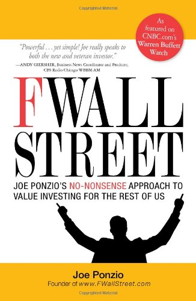

乔·庞奇奥（Joe Ponzio）在华尔街两家大型机构任职多年后，于2002年辞职，创立了以巴菲特早期合伙人模式运作的Meridian Business Group，同时运营颇受欢迎的价值投资博客FWallStreet.com，并成为CNBC"巴菲特观察"板块的长期推荐链接。《去你的华尔街》（F Wall Street: Joe Ponzio's No-Nonsense Approach to Value Investing for the Rest of Us）出版于2009年，由Adams Media发行，是庞奇奥将多年投资实践系统化后写就的一本价值投资入门书，目标读者是被华尔街术语和复杂模型所疏离的普通投资者。
本书的核心主张是：华尔街的本质是一台收费机器，它让普通人误以为投资必须依赖专业人士的帮助，而实际上，一个理性的个人投资者完全可以依靠常识和耐心，在不依赖华尔街的情况下获得满意的回报。庞奇奥引入"企业主视角"（owner's perspective）作为贯穿全书的分析框架：买入一只股票，就是成为这家企业的部分所有者，因此评估股票的正确方式是评估企业本身的价值，而非追踪股价涨跌。书中详细讲解了如何阅读财务报表、如何计算"所有者收益"（owner earnings）、如何估算内在价值，以及在市场下行时如何把握定价错误带来的买入机会。
庞奇奥的写作风格是本书的一大特色——他刻意回避金融教科书式的术语堆砌，转而使用贴近日常的类比与例子，将格雷厄姆与巴菲特体系中的核心概念以更通俗的方式传递。书中引用了巴菲特的名言："把市场波动视为你的朋友而非敌人；从愚行中获利，而非参与其中。"（"Look at market fluctuations as your friend rather than your enemy; profit from folly rather than participate in it."）这句话也是全书逆向投资逻辑的精髓所在。这一亲切的写作风格使本书在投资入门读物中颇受好评，众多读者将其列为推荐给投资新手的首选书目之一。
本书覆盖的核心主题——内在价值、安全边际、长期持有、逆向思维——均可追溯至格雷厄姆与巴菲特的经典体系，庞奇奥的贡献在于将这些思想用更直接的语言重新包装，让没有财务背景的读者也能快速上手。对于初次接触价值投资的读者，这是一本有效降低理解门槛的入门书；对于已有一定基础的投资者，它提供的更多是思路上的再整理，而非全新的知识增量。